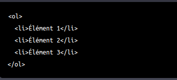

Il existe les listes ordonnées, les listes non-ordonnées et les listes de définitions
Les listes ordonnées en HTML sont créées en utilisant la balise ol. Voici un exemple de code HTML pour créer une liste ordonnée :

Dans cet exemple, la balise ol est utilisée pour encadrer les éléments de la liste ordonnée, et chaque élément de la liste est créé en utilisant la balise li. Le numéro d'ordre sera généré automatiquement par le navigateur web.
Il est également possible de spécifier un numéro de départ pour la liste en utilisant l'attribut start. Par exemple, si vous souhaitez commencer votre liste à partir de 5 plutôt que de 1, vous pouvez utiliser la syntaxe suivante :
Dans ce cas, les numéros de la liste commenceront à 5 au lieu de 1.
Les listes non ordonnées en HTML sont créées en utilisant l'élément ul (pour Unordered List).Voici un exemple de code HTML pour créer une liste non ordonnée :
Cela créera une liste non ordonnée contenant trois éléments, chacun étant créé en utilisant l'élément li (pour List Item).
Le résultat affichera une liste comme ceci :
li sont affichés avec un point devant eux par défaut, mais cela peut être modifié en utilisant du CSS.
Les listes de définitions en HTML sont créées en utilisant l'élément dl (pour Definition List).
Voici un exemple de code HTML pour créer une liste de définitions :
Cela créera une liste de définitions contenant trois termes et trois définitions, chacun étant créé en utilisant les éléments dt (pour Definition Term) et dd (pour Definition Description).
Le résultat affichera une liste comme ceci :
- Niveau 1
- Niveau 2
- Niveau 2
- Niveau 2
- Niveau 3
- Niveau 3
- Niveau 4
- Niveau 4
- Niveau 5
- Niveau 5